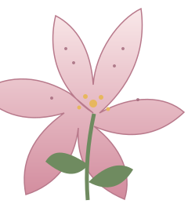

florescertambém é processo
UM ESPAÇO SOBRE MIM E MINHA TRAJETÓRIA
Iara Kethelyn.
um pouquinho do meu universo
Sou Iara Kethelyn, estudante do SESI-SENAI de Picos, apaixonada por tecnologia, design e programação. Aqui reúno projetos, aprendizados e experiências que fazem parte da minha trajetória.